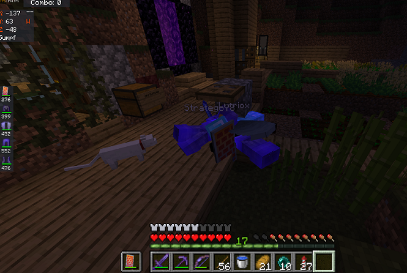

Über mich
moin, moin ich bin ein kleiner Hobbystreamer, der sich in vielem, wie zum Beispiel Webdesign ausprobiert. Außerdem bin ich auch in Blender unterwegs und habe schon die ein oder andere Sache modelliert. Dazu lade ich viele gelungene Modelle bei instagram und co. hoch. Tja was gibts noch zu wissen, Ich bin 14 Jahre alt zocke gerne und bin sehr kreativ.

Wichtiges
Hier werden wichtige Projekte, vergangene Projekte und Ankündigungen stehen.

social media
Hauptsächlich bin ich bei Twitch unterwegs aber auch eher selten. Falls ihr meinen Fortschritt mitverfolgen wollt gehts es hier unten zu Discord, Twitch und Instagram.